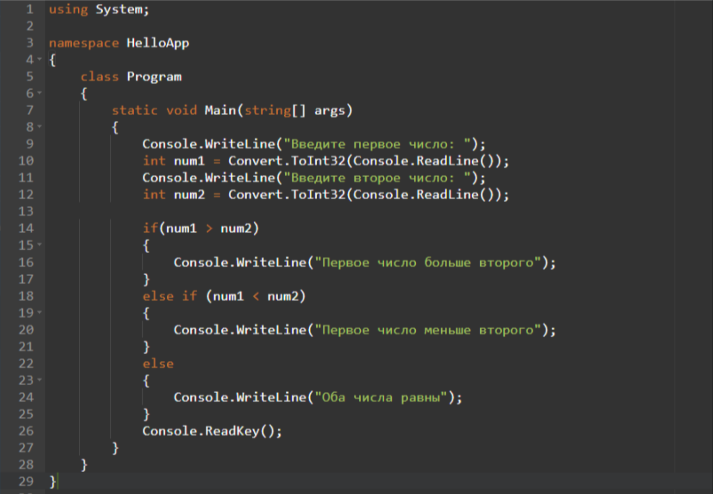
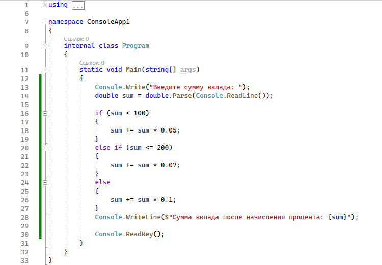

Задание №1
Необходимо написать консольную программу, где пользователь будет вводить с клавиатуры 2 числа. Числа будут сравниваться с последующим выводом в консоль результата этого сравнения (равны ли значения, а если нет, то какое число больше/меньше).
Теория
Для вывода информации на консоль мы используем встроенный метод Console.WriteLine. То есть, если мы хотим вывести некоторую информацию на консоль, то нам надо передать ее в метод Console.WriteLine:
Решение
Задание №2
Представим банк, в котором алгоритм начисления процента по вкладу зависит от суммы вклада. На вход будет дпоаваться число (сумма вклада). При значении меньше 100, будет начислено 5 %, если значение находится в диапазоне от ста до двухсот — 7 %, если больше — 10 %. Отработав, программа должна вывести общую сумму с начисленными процентами.
Теория
Для решения этой задачи воспользуемся выражением Convert.ToDouble(Console.ReadLine()), которое нам пригодится для получения вводимого с клавиатуры числа.
Решение
Задание №3
Найти все трехзначные простые числа (простым называется натуральное число, большее единицы, не имеющее других делителей, кроме единицы и самого себя).
Теория
Для решения этой задачи воспользуемся циклом for и оператором if
Решение

Задание №4
Ваша задача состоит в том, чтобы сделать две функции (max и min), которые получают на вход список целых чисел и возвращают наибольшее и наименьшее число в этом списке соответственно.
Теория
Пропишем 2 метода для возврата минимальной и максимальной переменной. Далее с помощью оператора return и методов Min, Max вернем требуемые переменные.